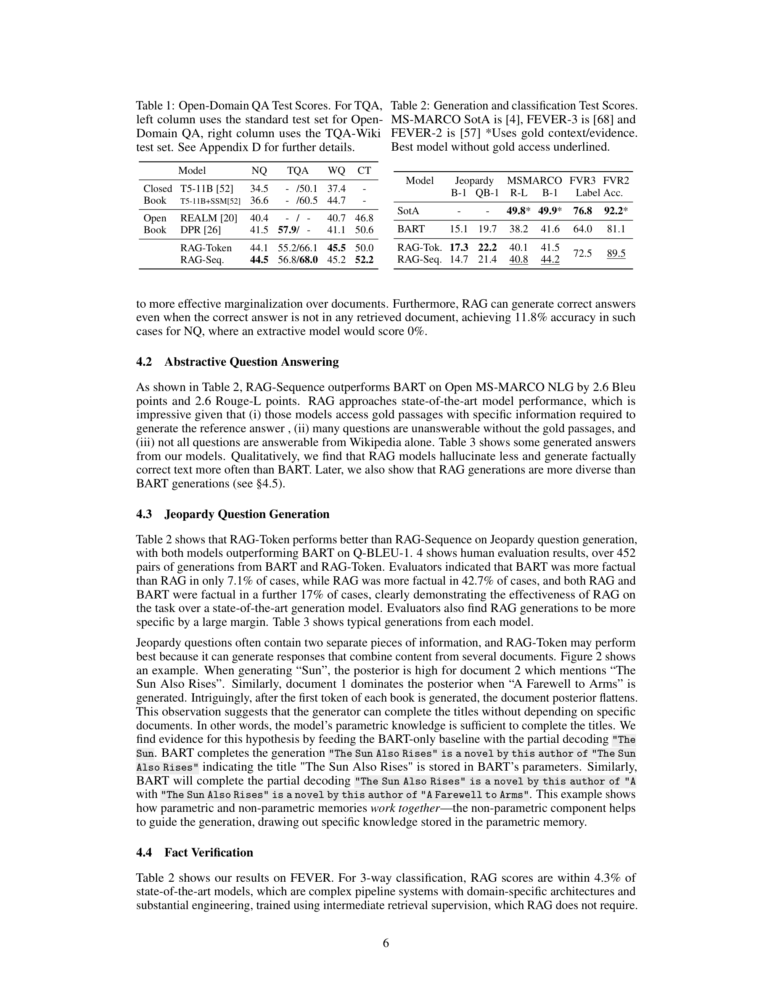
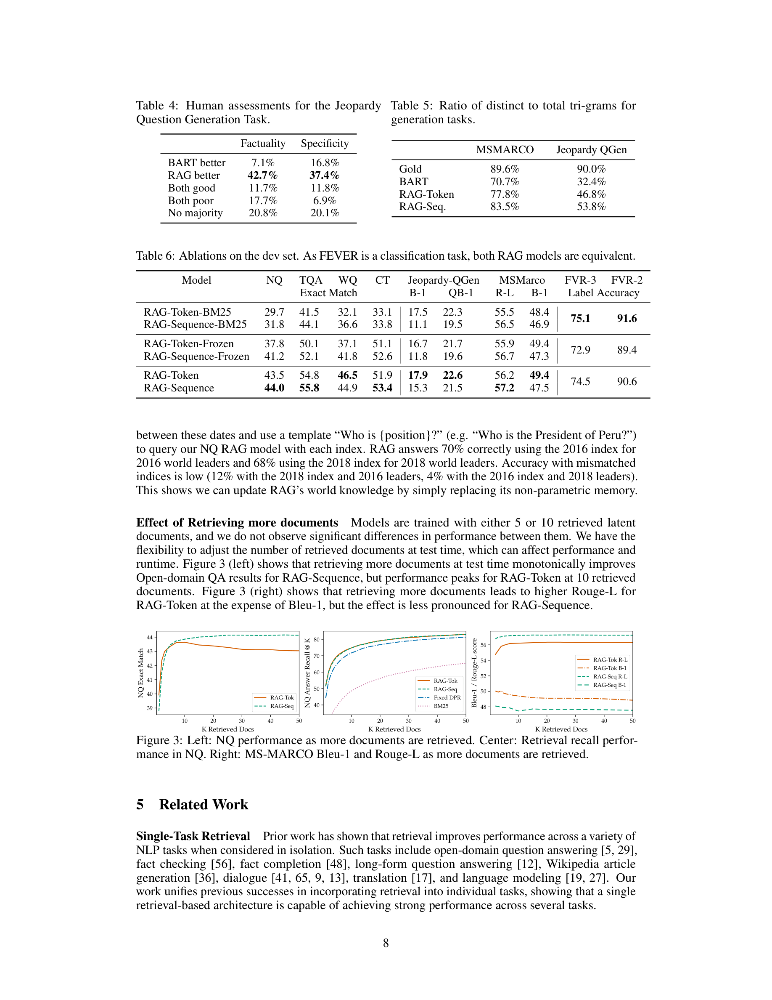

Figure 1
Figure 1
사전학습된 seq2seq 모델(BART)의 parametric memory와 Wikipedia 기반 dense vector index의 non-parametric memory를 결합한 Retrieval-Augmented Generation (RAG) 프레임워크를 제안한다. 입력 쿼리에 대해 DPR(Dense Passage Retriever)로 관련 문서를 검색하고, 검색된 문서를 latent variable로 취급하여 생성 과정에서 marginalize하는 두 가지 변형(RAG-Sequence, RAG-Token)을 소개한다. 이를 통해 knowledge-intensive NLP 태스크 전반에서 범용적으로 적용 가능한 fine-tuning 레시피를 확립하였다.

Figure 2
대규모 사전학습 언어 모델은 파라미터에 사실적 지식을 저장하지만, 지식의 정확한 접근 및 조작이 제한적이고, 예측의 출처 제공(provenance) 이 불가능하며, hallucination 문제가 존재한다. 또한 세상의 변화에 따라 모델의 지식을 갱신하려면 재학습이 필요하다. 기존의 REALM, ORQA 등 retrieval 결합 모델은 extractive QA에만 적용되어, 생성(generation) 태스크로의 확장이 미개척 상태였다. 이러한 한계를 극복하기 위해 retrieval과 generation을 결합하는 범용 아키텍처가 필요하였다.

Figure 3
RAG는 retrieval-augmented generation이라는 패러다임을 NLP 커뮤니티에 정립한 기념비적 논문이다. 제안 당시(2020) knowledge-intensive 태스크에서 parametric-only 모델과 extractive 모델의 한계를 명확히 진단하고, 두 메모리 유형의 결합이라는 우아한 해법을 제시하였다. 특히 RAG-Token의 토큰 단위 문서 활용과 index hot-swapping을 통한 지식 갱신 기능은 실용적 가치가 매우 높다.
다만 document encoder 고정, Wikipedia 단일 지식원, retrieval collapse 등의 한계가 있으며, 이후 RETRO, Atlas, Self-RAG 등 후속 연구에서 이러한 문제들이 점진적으로 해결되어 왔다. 현재 LLM 시대에서 RAG는 hallucination 완화와 최신 정보 반영을 위한 사실상의 표준 접근법으로 자리잡았으며, 본 논문은 그 이론적, 실험적 토대를 마련한 핵심 기여작이다.
논문의 실험 설계는 4개 QA 벤치마크 + 생성 + 분류 태스크를 아우르는 포괄적 평가와, retrieval ablation, BM25 비교, 인간 평가, diversity 분석 등 체계적이고 다층적인 검증을 수행하여 높은 신뢰도를 확보하였다. HuggingFace 통합을 통한 재현성 확보 또한 모범적이다.